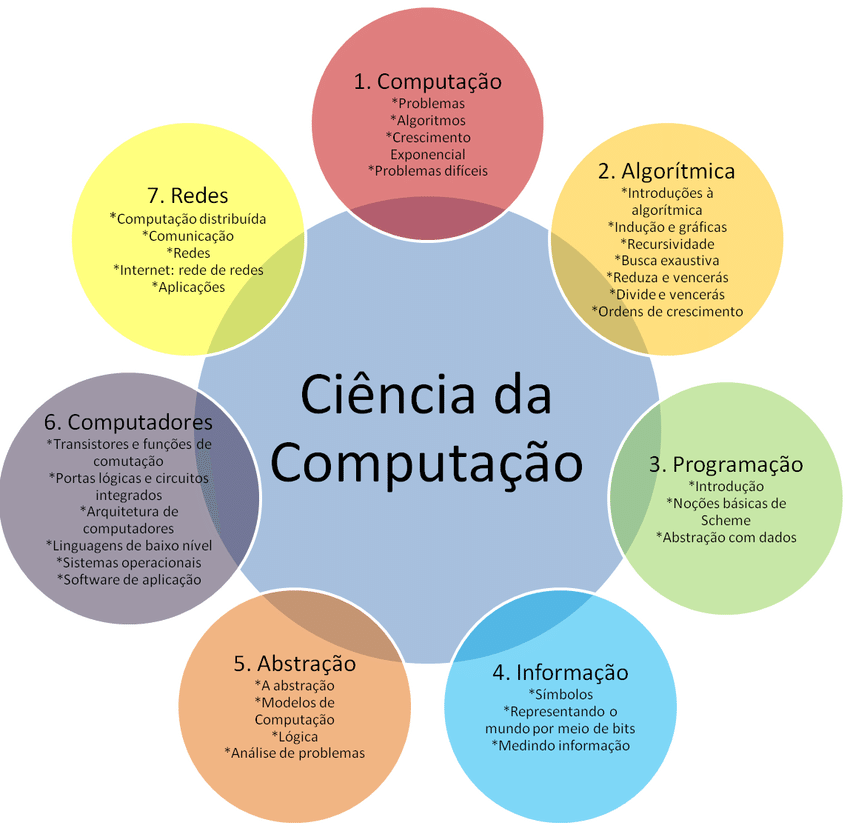

Ciência da Computação.
Publicado em 12/11/2025
Entendimento da parte acadêmica do que é a Computação. BitLovers.
"A Ciência da Computação é o
estudo teórico e prático da computação, que abrange a criação de algoritmos, o desenvolvimento de software, a análise de sistemas e a exploração de áreas como inteligência artificial, redes e segurança da informação."
Pode se usar essa explicação, o início dessa postagem. Como visto na primeira postagem, o ato de computar vem desde a antiguidade, nascendo na matemática e posteriormente virando a Computação. Atualmente, a Computação é uma área extremamente importante para o futuro, já que grande parte das tecnologias atuais, possuem envolvimento de técnicas e ferramentas digitais, virando se indispensável os conhecimentos computacionais.

O entendimento da computação pode ser elucidado, como uma grande junção de vários aspectos que formam uma base sólida. Vejamos a seguir:
1. Computação
Área que estuda os fundamentos gerais da computação.
• Problemas
• Algoritmos
• Crescimento exponencial
• Problemas difíceis
Esta parte trata de entender quais problemas podem ser resolvidos por máquinas e como eles crescem em complexidade.
2. Algorítmica
Área que estuda como construir algoritmos eficientes. Inclui:
• Recursividade
• Busca exaustiva
• Técnicas clássicas:
– Reduce and conquer (reduza e vença)
– Divide and conquer (divida e conquiste)
• Ordens de crescimento, como O(n), O(log n), O(n²)
É a base para aprender a pensar como um cientista da computação.
3. Programação
Área que ensina como transformar ideias e algoritmos em código executável.
• Introdução
• Noções básicas de Scheme
• Abstração com dados
A programação desenvolve a habilidade de construir soluções usando linguagens e estruturas formais.
4. Informação
Área que estuda como a informação é representada e manipulada.
• Símbolos
• Representando o mundo por meio de bits
• Medindo informação
Inclui conceitos como codificação, bits, bytes e formas de quantificar dados.
5. Abstração
Área central que permite modelar e simplificar problemas.
• A abstração
• Modelos de computação
• Lógica
• Análise de problemas
A abstração permite ignorar detalhes irrelevantes e focar no funcionamento essencial.
6. Computadores
Área que estuda como os computadores funcionam internamente.
• Transistores e funções de comutação
• Portas lógicas e circuitos integrados
• Arquitetura de computadores
• Linguagens de baixo nível
• Sistemas operacionais
• Software de aplicação
É onde se entende o caminho do hardware até o software.
7. Redes
Área que estuda a comunicação entre computadores.
• Computação distribuída
• Comunicação
• Redes
• Internet: rede de redes
• Aplicações
É a base para entender como dados viajam pelo mundo e como sistemas se conectam.
Com essas bases, é formado o ramo acadêmico da Computação.
Os bacharéis/tecnólogos da área são voltados a algumas das áreas apresentadas, porém, possuem base de todos os aspectos:
• Ciência da Computação
Bacharel mais comum. Abrange todos os aspectos mostrados e é o mais utilizado para iniciação científica.
• Engenharia de Computação
Ramo da Engenharia com conhecimentos aplicados de Eletrônica, Computação e Elétrica. Área puxada para o desenvolvimento de sistemas embarcados e soluções voltadas a Hardware.
• Sistemas de Informação
Bacharel voltado a análise de dados e informações, soluções de governança, economia e administração, todos voltados a área de computação. Ele é voltado para pessoas que desejam seguir em carreira profissional, diferente do foco acadêmico do curso de Ciência da Computação.
• Análise e Desenvolvimento de Sistemas
Tecnólogo voltado a práticas de desenvolvimento de sistemas e análise e consultoria de infraestruturas de TI. É o curso mais curto, porém, o mais prático. Recomendado para aqueles que querem entrar rapidamente no mercado, sem se preocupar com experiência ou carreira acadêmica.
• Engenharia de Software
Ramo da Engenharia voltado exclusivamente para a produção de sistemas e lógica, sendo o completo oposto de Engenharia de Computação. As matérias de Gestão de Sistemas Operacionais de Servidores, Sistemas Embarcados e Arquitetura de Redes são substítuidas por elementos avançados de programação e lógica.
Considerações finais.
A elucidação dos ramos da Computação, pode facilitar a escolha de possíveis interessados, o que ele realmente pretende seguir. Não deixando o candidato preso a uma só área de conhecimento.